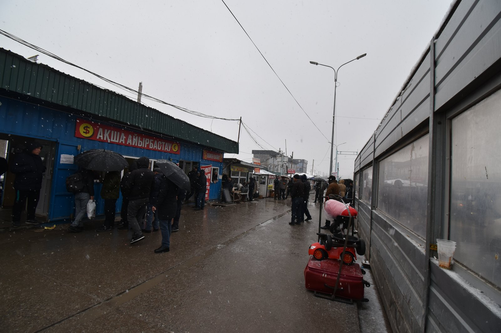

Oʻzbekiston–Qozogʻiston munosabatlarining oʻrnatilishi (1991–1996): qoʻshni davlatlar diplomatiyasi
Ikki yirik Markaziy Osiyo davlati mustaqillikning ilk yillarida qanday aloqa oʻrnatdi? Olmaota bitimi, 1992-yil diplomatik munosabatlar, 1994-yilgi Markaziy Osiyo Ittifoqi va Karimov–Nazarboyev davri — tasdiqlangan sanalar bilan.

Oʻzbekiston va Qozogʻiston — Markaziy Osiyoning ikki yirik davlati boʻlib, ularning diplomatik aloqalari mustaqillikning ilk yillarida shakllandi. Har ikki davlat 1991-yilda mustaqil boʻldi: Oʻzbekiston 1991-yil 31-avgustda, Qozogʻiston esa — Sovet respublikalari ichida eng oxirgi boʻlib — 1991-yil 16-dekabrda davlat mustaqilligini eʼlon qildi. Shu tariqa ikki qoʻshni bir vaqtning oʻzida yangi davlat sifatida xalqaro maydonga chiqdi (Manba: Wikipedia — 1991 Uzbek independence referendum; Wikipedia — On the State Independence of the Republic of Kazakhstan).
Olmaota bitimi va MDH (1991)
Ikki davlat oʻrtasidagi ilk rasmiy koʻp tomonlama aloqa Mustaqil Davlatlar Hamdoʻstligi (MDH) doirasida boshlandi. 1991-yil 21-dekabrda Qozogʻiston poytaxti Olmaotada (Alma-Ota) imzolangan Olmaota bitimi orqali MDH kengaydi; uni imzolagan 11 davlat qatorida Oʻzbekiston va Qozogʻiston ham bor edi — hujjatni Islom Karimov va Nursulton Nazarboyev imzoladi (Manba: Wikipedia — Alma-Ata Protocol; CVCE — Signatories of the Alma-Ata agreement, 1991).
Diplomatik munosabatlar: 1992-yil
Oʻzbekiston va Qozogʻiston oʻrtasida rasmiy diplomatik munosabatlar 1992-yil 23-noyabrda oʻrnatildi. Bu sana Qozogʻistonning tashqi aloqalari roʻyxatida keltirilgan; ikki davlat oʻrtasidagi aloqalarga bagʻishlangan ayrim manbalar qisqa boʻlgani uchun ushbu sana asosan Qozogʻiston tomonidagi rasmiy roʻyxatga tayanadi (Manba: Wikipedia — Foreign relations of Kazakhstan).

Markaziy Osiyo integratsiyasi (1993–1994)
Mustaqillikning ilk yillarida Oʻzbekiston va Qozogʻiston (Qirgʻiziston bilan birga) iqtisodiy integratsiyaga intildi. 1993–1994-yillarda uch davlat yagona iqtisodiy makon yaratish boʻyicha shartnomalar imzoladi; bu jarayon 1994-yil 8-iyulda Markaziy Osiyo Ittifoqi (keyinchalik Markaziy Osiyo Iqtisodiy Hamjamiyati)ning rasman tashkil etilishi bilan yakunlandi — davlat rahbarlari kengashi, ijroiya qoʻmita va Markaziy Osiyo banki tashkil qilindi. Manbalarda bu bosqichlarning aniq sanasi biroz farq qiladi, shuning uchun bu yerda yagona kun emas, umumiy davr keltiriladi (Manba: Wikipedia — Central Asian Union; Silk Road Studies — Central Asian integration).
Eslatma: Oʻzbekiston va Qozogʻiston oʻrtasidagi ikki tomonlama «Abadiy doʻstlik toʻgʻrisida»gi shartnoma keyinroq — 1994–1996-yillardan tashqarida, 1998-yilda imzolangan; shuning uchun u mazkur davr maqolasiga kiritilmaydi (Manba: Wikipedia — Kazakhstan–Uzbekistan relations).
Munosabatlarni shakllantirgan umumiy omillar
Ikki davlatni bir qancha umumiy jihatlar bogʻlaydi: ularning ikkalasi ham turkiy xalq koʻpchilikni tashkil etadigan, musulmon anʼanasiga ega, sobiq Sovet respublikalaridir va uzun quruqlik chegarasini boʻlishadi. Suv masalasi munosabatlarning tarkibiy qismi boʻlib qoldi: Sirdaryo yuqori oqimdan (Qirgʻiziston va Oʻzbekiston) Qozogʻistonga oqib oʻtadi, bu esa uch davlatni yagona suv-energetika bogʻliqligiga tortadi; ikkala davlat ham qurib borayotgan Orol dengizi bilan chegaradosh. Shu suv, transport va anklav masalalari ilk munosabatlar ohangini belgiladi (Manba: Wikipedia — Foreign relations of Uzbekistan; RFE/RL — Central Asia: 30 years of independence).
Rahbarlar: Karimov va Nazarboyev
1991–1996-yillarda ikki davlatni oʻsha davrning markaziy siyosiy shaxslari boshqardi. Oʻzbekistonda — Islom Karimov (1990-yildan, mustaqillikdan keyin ham, 2016-yilgacha); Qozogʻistonda — Nursulton Nazarboyev, 1991-yil 1-dekabrda mustaqil Qozogʻistonning birinchi prezidenti etib saylangan va 2019-yilgacha rahbarlik qilgan. Ikki rahbar bu yillarda MDH va Markaziy Osiyo integratsiyasi doirasidagi uchrashuvlarda bir necha bor yuzma-yuz kelgan; biroq aynan shu davrga oid alohida, aniq sanali ikki tomonlama sammitni ishonchli ikkinchi manba bilan tasdiqlab boʻlmadi, shuning uchun uchrashuvlar umumiy tarzda eslatiladi (Manba: Britannica — Islam Karimov; Wikipedia — Nursultan Nazarbayev; RFE/RL).
Poytaxt konteksti
Bu davrda Qozogʻistonning poytaxti Olmaota (Alma-Ota) edi. Poytaxtni Aqmolaga koʻchirish toʻgʻrisidagi farmon 1997-yil 20-oktyabrda chiqdi, shahar esa 1998-yil 6-mayda Ostona (Astana) deb nomlandi. Demak, 1991–1996-yillarda Oʻzbekiston bilan muloqot olib borgan Qozogʻiston poytaxti Olmaota boʻlib qolgan (Manba: Wikipedia — Capital relocation in Kazakhstan; Wikipedia — History of Astana).
Nega bu muhim
Oʻzbekiston va Qozogʻiston oʻrtasidagi munosabatlar — Markaziy Osiyodagi eng muhim ikki tomonlama aloqalardan biri. Ularning 1991–1996-yillardagi poydevori — MDH, diplomatik aloqalar va mintaqaviy integratsiya urinishlari — keyingi oʻn yilliklardagi hamkorlikni belgilab berdi. Ushbu maqola faqat tasdiqlangan sana va dalillarni keltiradi; manbalarda farq qiladigan sanalar taxminiy sifatida belgilab oʻtildi.

Manbalar
- Wikipedia — Alma-Ata Protocol
- Wikipedia — Foreign relations of Kazakhstan
- Wikipedia — Central Asian Union
- Wikipedia — On the State Independence of the Republic of Kazakhstan
- Wikipedia — Nursultan Nazarbayev
- Wikipedia — Capital relocation in Kazakhstan
- Britannica — Islam Karimov
- RFE/RL — Central Asia: 30 Years of Independence